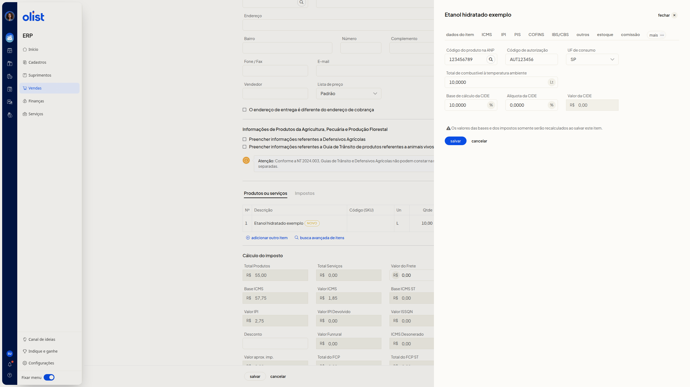

Como configurar produtos da tabela ANP (Combustíveis) na Nota Fiscal
Descrição
Na nota fiscal nova, ainda não emitida, a aba Combustível permite informar o código do produto na ANP e os demais dados de combustível e CIDE do item.
Essa aba fica no editor do item, não no formulário principal da nota. O caminho começa em Vendas > Notas Fiscais > Incluir nota fiscal. Inclua um item e abra Combustível. Se a aba não aparecer na barra de abas, clique em mais e depois em Combustível.
Pré-requisitos
- Você precisa da permissão de Notas Fiscais para acessar a tela de notas fiscais.
- Você precisa da permissão para editar notas fiscais para editar a nota.
- Uma nota fiscal nova, aberta em Vendas > Notas Fiscais > Incluir nota fiscal, ainda não emitida.
- Ao menos um item incluído em Produtos ou serviços.
Importante
Os valores das bases e dos impostos somente serão recalculados ao salvar o item.
Instruções
- Acesse Vendas > Notas Fiscais.
- Clique em Incluir nota fiscal.
- Na seção Produtos ou serviços, inclua um item.
- Abra a edição desse item.
- Na barra de abas, clique em mais e depois em Combustível.
- Preencha os campos da aba. Nenhum campo é obrigatório.
-
Código do produto na ANP: informe o código. Há um botão de busca ao lado do campo.
-
Código de autorização: informe o código.
-
UF de consumo: selecione a UF. A lista inclui as UFs e EX.
-
Total de combustível à temperatura ambiente: informe um número com vírgula decimal. A unidade Lt aparece ao lado do campo.
-
Base de cálculo da CIDE: informe um número com vírgula decimal. % aparece ao lado do campo.
-
Alíquota da CIDE: informe um número com vírgula decimal. % aparece ao lado do campo.
-
Valor da CIDE: informe o valor em reais. R$ aparece ao lado do campo.

- Clique em Salvar. Os valores das bases e dos impostos somente serão recalculados ao salvar este item.
Perguntas frequentes
Onde fica a aba Combustível?
No editor do item, não no formulário principal da nota. Se ela não aparecer na barra de abas, clique em mais e depois em Combustível.
Os campos da aba Combustível são obrigatórios?
Não. Nenhum campo da aba é obrigatório.
Links relacionados
Se precisar de ajuda para configurar a aba Combustível, fale com o suporte.